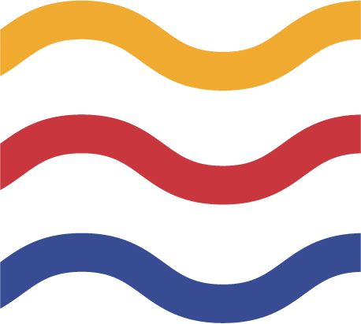

<ion-header>
  <ion-navbar>
    <h1>BASSIN A FLOT<br>
      <span>Histoires et Témoignages</span>
    </h1>

      
  </ion-navbar>
</ion-header>

<ion-content>
    <ion-grid>
        <!--- Premier rang --->
        <ion-row>
            <ion-col col-12>
                <div class="gris" (click)="goToPage('Musee')">

                    
                    

                    <h3>Musée Maritime</h3>

                    <p *ngIf="!horlogeRouge">Ouvert</p>
                    <p *ngIf="horlogeRouge">Fermé</p>

                    <p>10H - 2H</p>


                    <ion-icon name="arrow-forward"></ion-icon>
                </div>
            </ion-col>
        </ion-row>

        <!--- Second rang --->
        <ion-row (click)="goToPage('Liste_bateaux')">
            <ion-col col-9>
                
                <h3>Les bateaux</h3>
            </ion-col>
            <ion-col col-3>
                <ion-icon name="arrow-forward"></ion-icon>
            </ion-col>
        </ion-row>

        <!--- Troisieme rang --->
        <ion-row>
            <ion-col (click)="goToPage('Meteo')" col-6>
                <h5>Météo</h5>
            </ion-col>
            <ion-col (click)="goToPage('Liste_temoignages')" col-6>
                <ion-icon name="chatbubbles"></ion-icon>
                <h5>Témoignages</h5>
            </ion-col>
        </ion-row>
    </ion-grid>
</ion-content>